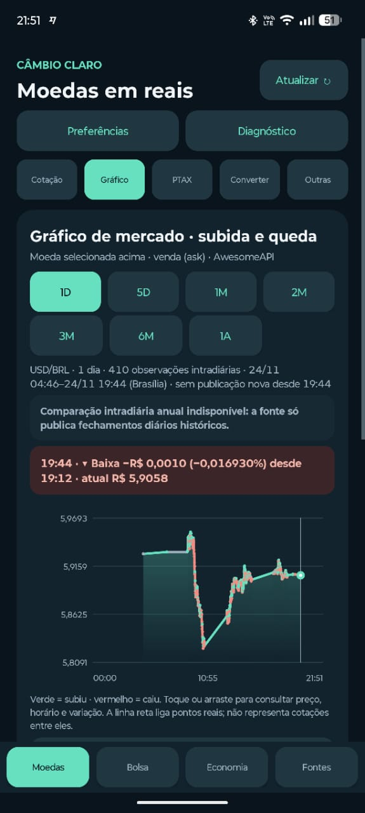
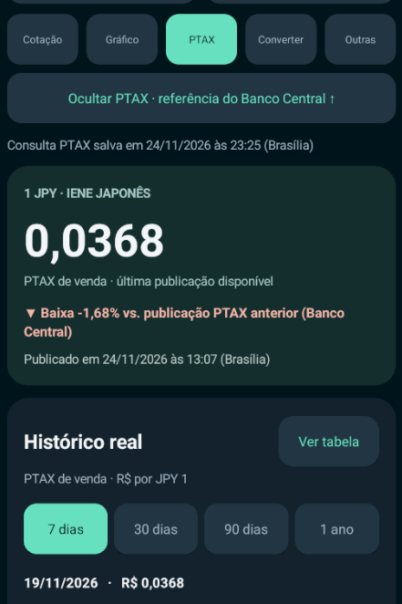

Moedas em reais
Compare USD, EUR, GBP, JPY e outras moedas frente ao real com valor, variação, fonte e horário.
MERCADO SEM ACHISMO
Câmbio Claro reúne moedas, PTAX, bolsa e conversão em uma experiência simples — sempre mostrando a fonte, o horário e quando o dado pode estar atrasado.
Sem anúncios · Sem rastreadores · Fontes identificadas

PTAX COM CONTEXTO
A PTAX do Banco Central fica em um espaço próprio, com o horário da publicação e o histórico, separada da cotação de mercado.

01 / RECURSOS
Menos telas confusas. Mais informação útil, organizada por assunto.
Compare USD, EUR, GBP, JPY e outras moedas frente ao real com valor, variação, fonte e horário.
Veja subida e queda por ponto publicado, toque no gráfico e consulte o valor exato daquele horário.
Não misture referência do Banco Central com preço de mercado. Cada tipo de cotação tem seu espaço.
Faça cenários com a moeda escolhida e confira qual taxa foi usada, sem esconder a referência.
Acompanhe a moeda escolhida sem abrir o app. O Android informa quando uma atualização pode ser adiada.
Consulte ações, Ibovespa, indicadores e fontes oficiais em áreas separadas para não misturar contextos.
02 / COMO FUNCIONA
Escolha a moeda
Selecione o ativo e o assunto: cotação, gráfico, PTAX ou conversão.
Leia o contexto
Confira valor, variação, horário, fonte e aviso de atraso.
Acompanhe automaticamente
O app tenta atualizar em segundo plano respeitando as regras do Android.
03 / TRANSPARÊNCIA
O Câmbio Claro não promete um preço mágico. Cotações podem variar entre provedores por horário, spread, compra/venda, atraso, liquidez e regras da fonte.
Por isso, o produto identifica a origem do dado, mantém PTAX separada, sinaliza desatualização e não transforma lacunas em números inventados.
04 / PLANOS
ESSENCIAL
A base para consultar e entender o mercado.
PLUS · EM DESENVOLVIMENTO
Mais contexto para cenários e decisões recorrentes.
05 / DÚVIDAS
Ele consulta fontes de mercado e mostra o horário publicado. A frequência e eventuais atrasos dependem da fonte, da rede e das regras do Android.
Sites podem usar provedores, horários, spreads e tipos de preço diferentes. O Câmbio Claro identifica a referência usada para você comparar corretamente.
Não. Ele é uma ferramenta informativa e não substitui análise ou orientação profissional.
O funcionamento básico não exige cadastro. Preferências e cache ficam no aparelho; o diagnóstico só é compartilhado quando você escolhe fazê-lo.
Use o botão de patrocínio para enviar um e-mail ao responsável. Não há cobrança automática nesta página; qualquer condição de apoio será combinada de forma transparente.
Banco Central para PTAX, AwesomeAPI para câmbio e um gateway protegido para dados de ações. O horário e a origem ficam visíveis no app.
LANÇAMENTO EM PREPARAÇÃO
Entre na lista de interesse ou apoie o desenvolvimento antes do lançamento oficial.
O patrocínio será destinado a infraestrutura, APIs, testes em aparelhos e preparação da publicação.